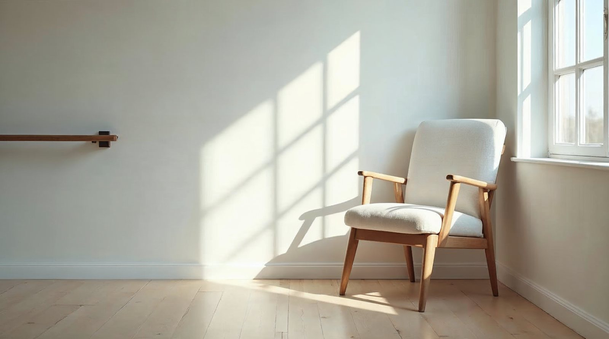
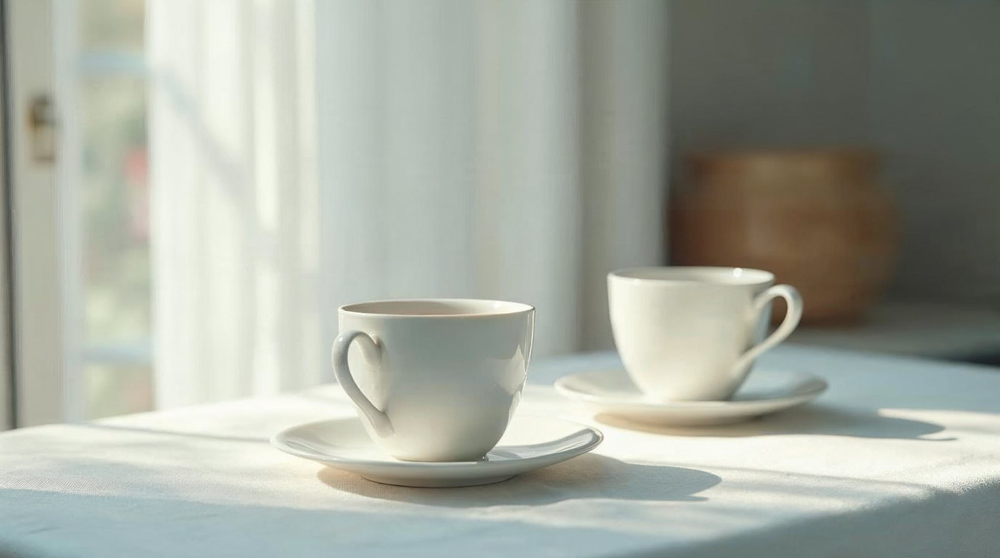

이종호 한의사 감수좋은꿈참사랑한의원 대표원장 (한의사 면허번호 19769)발행 2026-11-26 · 수정 2026-11-26
이 글의 차례
계단을 몇 칸 오르지 않았는데 숨이 턱 막힙니다. 잠깐 쪼그려 앉았다 일어서면 눈앞이 하얘지고, 오후만 되면 몸이 모래주머니를 단 것처럼 무겁습니다. 산부인과 검진에서 빈혈 수치가 낮다는 말을 듣고 철분제를 받아 왔는데, 먹으면 속이 메스꺼워 자꾸 건너뛰게 됩니다.
임신 중 빈혈로 진료실을 찾으시는 분들께 가장 자주 듣는 고민은 철분제입니다. 먹어야 하는 건 아는데 속이 불편하고 변비가 생겨서 이어 가기가 어렵다는 것이지요. 그러다 보니 수치는 그대로이고, 피곤함과 어지럼도 이어집니다.
임신 중 빈혈은 흔한 일입니다. 아기를 키우기 위해 몸속 피의 양이 크게 늘고, 아기에게 철분이 많이 가면서 엄마 몸의 철분 창고가 비기 쉽기 때문입니다. 흔하다고 해서 그냥 넘길 일은 아니지만, 지나치게 겁먹으실 일도 아닙니다.
이 글에서는 산부인과에서 받은 철분제를 속 편하게 이어 가는 방법, 식사에서 철분을 챙기는 요령, 어지럼이 올 때 생활에서 조심할 부분을 차례로 정리해 보겠습니다.
임신 중 빈혈은 무엇인가요
빈혈은 피 속에서 산소를 나르는 적혈구, 정확히는 헤모글로빈이 부족한 상태를 말합니다. 헤모글로빈이 부족하면 온몸에 산소가 넉넉히 가지 못해 쉽게 지치고, 숨이 차고, 어지럽게 느껴집니다.
임신 중에는 혈액 속 물 성분이 먼저 크게 늘어나고 적혈구는 조금 늦게 따라 늘어납니다. 그래서 피가 살짝 묽어진 것처럼 수치가 낮게 나오는 시기가 있습니다. 이것만으로도 수치가 조금 내려갈 수 있어서, 임신 중에는 빈혈 기준을 따로 두고 봅니다.
임신 중 빈혈의 대부분은 철분이 부족해서 생깁니다. 철분은 헤모글로빈을 만드는 재료인데, 임신 중기 이후에는 아기와 태반, 늘어난 엄마의 피를 위해 철분이 평소보다 훨씬 많이 필요합니다. 음식만으로는 다 채우기 어려워 철분제를 함께 쓰는 경우가 많습니다.
왜 임신 중에 빈혈이 생기기 쉬울까요
가장 큰 이유는 필요한 철분이 갑자기 많아지기 때문입니다. 여기에 아래와 같은 생활 요인이 겹치면 철분 창고가 더 빨리 비기 쉽습니다.
- 임신 전부터 생리량이 많아 철분이 부족했던 경우
- 입덧으로 고기와 생선, 채소를 제대로 못 드신 경우
- 철분제를 먹으면 속이 불편해 자주 건너뛴 경우
- 커피나 녹차를 식사와 함께 자주 드신 경우
- 쌍둥이 임신이거나 출산 간격이 짧은 경우
- 위장이 약해 소화와 흡수가 잘 안 되는 경우
차와 커피는 생각보다 영향이 있습니다. 차와 커피에 들어 있는 성분이 음식 속 철분이 흡수되는 것을 방해할 수 있다고 알려져 있습니다. 식사 직후 커피 한 잔이 습관이시라면 시간을 한두 시간 뒤로 옮겨 보세요.
빈혈 어지럼, 다른 어지럼과 어떻게 다른가요
임신 중에는 빈혈이 아니어도 어지러운 일이 많습니다. 혈관이 넓어지면서 혈압이 조금 내려가고, 오래 서 있거나 갑자기 일어나면 핑 도는 느낌이 들 수 있습니다. 끼니를 거른 날 혈당이 내려가 어지러운 경우도 있습니다.
빈혈에서 오는 어지럼은 대개 하루 종일 기운이 없고, 조금만 움직여도 숨이 차고 가슴이 두근거리는 느낌과 함께 옵니다. 얼굴이 창백해 보이고 손톱이 쉽게 갈라지며, 손발이 차다는 분도 많습니다.
반면 갑자기 일어설 때만 잠깐 핑 돌고 금세 괜찮아진다면 자세를 바꿀 때 혈압이 잠시 내려가는 경우일 수 있습니다. 세상이 빙빙 도는 어지럼이라면 귀 쪽 원인을 생각해 봐야 합니다. 어떤 어지럼인지에 따라 살피는 방향이 달라지니, 어지러울 때의 모양을 잘 기억해 두세요.
집에서 해 보는 간단한 점검
아래 질문에 스스로 답해 보세요. 진료실에서 여쭙는 내용과 거의 같습니다.
- 계단 한 층을 오를 때 예전보다 숨이 훨씬 찬가요?
- 앉았다 일어설 때 눈앞이 하얘지는 일이 잦은가요?
- 얼굴이나 입술, 손톱이 창백하다는 말을 들었나요?
- 손톱이 잘 부러지거나 숟가락처럼 오목해지지 않았나요?
- 얼음이나 흙냄새처럼 평소와 다른 것이 자꾸 당기나요?
- 철분제를 처방받은 대로 꾸준히 드시고 있나요?
얼음을 자꾸 씹고 싶어지는 것은 철분 부족과 함께 나타나기도 하는 신호로 알려져 있습니다. 이런 변화가 있다면 다음 산부인과 검진 때 함께 말씀드려 보세요.
철분제를 속 편하게 이어 가는 요령
철분제는 꾸준히 드시는 것이 가장 중요합니다. 그런데 메스꺼움과 변비 때문에 포기하시는 분이 많습니다. 아래 요령을 하나씩 해 보시고, 그래도 불편하면 처방한 선생님과 다른 종류로 바꿀 수 있는지 상의해 보세요.
- 공복에 먹으면 속이 쓰린 분은 식사 직후나 잠자기 전에 드셔 보기
- 오렌지나 귤, 키위처럼 비타민 C가 있는 과일과 함께 드시기
- 우유, 칼슘제, 제산제와는 시간을 두 시간 정도 떨어뜨려 드시기
- 커피와 녹차는 철분제 앞뒤로 한두 시간 피하기
- 변비가 생기면 물과 채소, 걷기를 함께 늘리기
- 변 색이 검게 변하는 것은 철분제를 드시면 흔히 생길 수 있다는 것 알아 두기
먹는 시각을 정해 알람을 맞춰 두면 건너뛰는 날이 줄어듭니다. 하루를 깜빡했다고 다음 날 두 배로 드시기보다, 처방대로 다시 이어 가시면 됩니다. 철분제를 드시면서 칼슘제나 다른 영양제를 함께 드신다면 약사나 산부인과 선생님께 먹는 시각을 한번 확인해 두세요.
식사에서 철분을 챙기는 방법
철분은 음식 속에 두 가지 모습으로 들어 있습니다. 고기와 생선, 조개류에 들어 있는 철분은 몸에 비교적 잘 흡수되고, 콩과 시금치, 미역 같은 식물성 음식의 철분은 흡수가 조금 더딥니다. 두 가지를 함께 드시면 흡수를 돕는 데 도움이 될 수 있습니다.
- 살코기, 소고기, 닭다리살처럼 붉은 기운이 있는 고기
- 고등어, 꽁치 같은 생선과 바지락, 굴 같은 조개류(잘 익혀서)
- 달걀노른자, 두부, 콩, 렌틸콩
- 시금치, 근대, 미역, 김 같은 채소와 해조류
- 비타민 C가 많은 파프리카, 브로콜리, 귤, 딸기
입덧이 심해 고기 냄새를 못 견디는 시기라면 차갑게 식힌 수육이나 달걀, 두부처럼 냄새가 덜한 것부터 조금씩 드셔 보세요. 한 번에 많이 드시기보다 하루에 여러 번 나눠 조금씩 드시는 편이 편합니다.
간은 철분이 많지만, 임신 중에는 비타민 A를 지나치게 많이 드시지 않도록 자주 드시는 것은 조심하라는 이야기가 있습니다. 어떤 음식을 얼마나 드실지는 산부인과에서 들은 안내를 먼저 따라 주세요.

어지러울 때 생활에서 조심할 것
빈혈이 있을 때는 몸이 산소를 아껴 쓰도록 생활 속도를 조금 늦추는 것이 도움이 됩니다. 특히 어지러워서 넘어지는 일이 없도록 조심하셔야 합니다.
- 앉았다 일어설 때는 잠시 걸터앉아 숨을 고른 뒤 천천히 일어서기
- 아침에는 누운 채 발목을 몇 번 움직인 뒤 일어나기
- 뜨거운 물로 오래 목욕하지 않기, 욕실 문은 살짝 열어 두기
- 사람이 많고 더운 곳에서 오래 서 있지 않기
- 어지러우면 바로 앉거나 벽을 짚고 쪼그려 앉기
- 끼니를 거르지 말고 물을 자주 마시기
출퇴근길 지하철처럼 오래 서 있어야 하는 곳에서는 임산부 배려석을 편하게 이용하시고, 어지러움이 오면 망설이지 말고 자리를 부탁하세요. 가방에 작은 간식과 물을 넣어 두시면 든든합니다.
빈혈은 잠과 기분에도 영향을 줍니다
빈혈이 있으면 몸이 늘 조금씩 숨이 모자란 상태로 지내게 됩니다. 그래서 낮에는 졸리고 멍한데, 밤에는 오히려 다리가 저릿하거나 불편해서 잠들기 어렵다는 분이 계십니다. 철분이 부족할 때 잠들기 전 다리가 근질거리고 가만히 두기 어려운 느낌이 함께 오기도 한다고 알려져 있습니다.
기분도 함께 가라앉기 쉽습니다. 조금만 움직여도 지치니 하고 싶은 일을 못 하고, 그러다 보면 스스로가 답답하게 느껴집니다. 이런 마음은 의지가 약해서가 아니라 몸의 산소와 기운이 모자라서 생기는 부분도 있다는 것을 알아 두시면 좋겠습니다.
그래서 빈혈이 있는 동안에는 할 일의 목록을 조금 줄이고, 쉬는 시간을 일정 속에 먼저 넣어 두시길 권합니다. 낮에 20~30분 옆으로 누워 쉬는 시간이 오후의 어지럼과 피로를 덜어 주는 경우가 많습니다.

가족이 함께 도울 수 있는 것
빈혈이 있는 시기에는 무거운 장바구니 들기, 화장실 청소처럼 숨이 차고 고개를 숙이는 일을 가족이 맡아 주시면 큰 도움이 됩니다. 철분제 먹는 시각에 함께 알람을 맞춰 두고 챙겨 주는 것도 좋은 방법입니다.
식탁도 함께 바꿔 볼 수 있습니다. 일주일에 몇 번은 살코기나 생선, 두부 반찬을 올리고, 식사 뒤 과일을 함께 나눠 드시면 철분과 비타민 C를 자연스럽게 챙길 수 있습니다. 혼자 챙기는 일이 아니라 가족이 함께 하는 일이 되면 훨씬 오래 이어집니다.
먼저 이렇게 여쭙니다
처음 오시면 저는 대략 이런 순서로 여쭙니다. 미리 생각해 오시면 이야기가 훨씬 수월해집니다.
- 지금 임신 몇 주이고, 산부인과에서 들은 빈혈 수치는 어떤가요?
- 철분제는 언제부터, 어떤 이름으로, 하루 몇 번 드시나요?
- 철분제를 드시면서 메스꺼움, 속쓰림, 변비가 생겼나요?
- 어지럼은 언제, 어떤 모양으로 오나요?
- 임신 전 생리량은 어땠나요?
- 입덧이나 소화 불편으로 식사를 제대로 못 하는 날이 많은가요?
임신 전 생리량 이야기는 꽤 중요합니다. 생리량이 많았던 분은 임신 전부터 철분 창고가 넉넉하지 않았을 가능성이 있어서, 출산 뒤 회복까지 길게 보고 챙기는 것이 좋습니다.
한의원에서 함께 살필 수 있는 경우
임신 중이라도 산부인과와 상의한 뒤 한의원 진료를 함께 받으실 수 있습니다. 이런 분이라면 상담해 보세요.
- 철분제를 먹으면 속이 불편하고 변비가 심해 이어 가기 힘든 경우
- 소화가 약하고 입맛이 없어 식사로 영양을 챙기기 어려운 경우
- 쉽게 지치고 손발이 차며 잠이 얕은 경우
- 어지럼과 함께 두근거림, 불안감이 자주 드는 경우
- 출산 뒤 회복을 미리 준비하고 싶은 경우
좋은꿈참사랑한의원에서는 맥을 짚고 얼굴빛과 손톱, 손발의 온도를 살피며, 소화와 대변, 잠, 어지럼의 모양을 함께 여쭙니다. 철분제를 이어 가는 데 걸림돌이 되는 속 불편과 변비를 함께 들여다봅니다.
진찰한 내용을 바탕으로 지금 상태에 맞는 방법을 정합니다. 식사와 철분제 먹는 시각을 함께 정리하고, 침은 임신 중 피하는 자리를 가려 조심스럽게 씁니다. 한약은 임신 중임과 드시는 철분제를 먼저 알려 주시고, 산부인과 선생님과 상의한 뒤 신중하게 정합니다.
처방받은 철분제는 혼자 멈추지 마세요. 한의원 진료는 철분제를 대신하는 것이 아니라, 철분제를 편하게 이어 갈 수 있도록 곁에서 돕는 것입니다.
이렇게 기록해 오시면 상담이 쉬워집니다
빈혈은 검사 수치와 함께 하루하루의 몸 상태를 보는 것이 중요합니다. 1~2주 정도만 간단히 적어 보세요.
- 철분제를 드신 시각과 빠뜨린 날
- 철분제 뒤 속 불편과 대변 상태
- 어지럼이 온 시각과 상황(일어설 때, 오래 서 있을 때 등)
- 계단이나 걷기에서 숨이 찬 정도
- 그날 드신 고기, 생선, 콩, 채소
- 산부인과 검진 때 들은 수치
철분제를 꾸준히 드신 기간과 수치의 변화를 나란히 놓으면, 다음 검진 때 산부인과 선생님과 이야기를 나누기도 훨씬 쉬워집니다.
출산 뒤까지 길게 보고 챙기기
출산 때는 피를 어느 정도 잃게 되고, 출산 뒤에는 모유 수유와 밤중 수유로 몸이 쉬기 어렵습니다. 임신 중에 철분 창고를 채워 두는 일은 출산 뒤 회복을 준비하는 일이기도 합니다.
철분제를 언제까지 드실지는 산부인과에서 안내해 주는 대로 따르시면 됩니다. 지금은 오늘 저녁 철분제를 귤 한 개와 함께 드셔 보는 것부터 시작해 보세요. 다음에 오시면 기록부터 함께 펼쳐 보겠습니다.
이런 증상은 먼저 확인이 필요합니다
- 가만히 쉬어도 숨이 차고 가슴이 심하게 두근거리거나, 정신을 잃고 쓰러진 적이 있는 경우
- 질 출혈이 있거나, 피를 토하거나 변이 끈적한 검은색으로 계속 나오는 경우
이런 신호가 있으면 한의원보다 가까운 병원이나 응급실을 먼저 찾으세요.
함께 읽으면 좋은 글
- 빈혈이 있다는 말을 듣고 어지럽고 쉽게 지칠 때, 철분과 생활은 어떻게 살피나요?
- 임신 중 변비가 심해졌을 때는 무엇을 먼저 살피고, 일상에서는 어떻게 하나요?
- 임신 중 입덧이 심할 때는 하루를 어떻게 지내고, 한의원에는 무엇을 알려야 하나요?
- 앉았다 일어설 때 어지러운 것은 어떤 점을 살펴보나요?
- 임신 중이거나 임신 가능성이 있을 때는 한의원에 무엇을 알려야 하나요?
여쭙는 것
- 지금 임신 몇 주이고, 산부인과에서 들은 빈혈 수치는 어떤가요?
- 철분제는 언제부터, 어떤 이름으로, 하루 몇 번 드시나요?
- 철분제를 드시면서 메스꺼움, 속쓰림, 변비가 생겼나요?
한의원에서 함께 살필 것
- 철분제를 먹으면 속이 불편하고 변비가 심해 이어 가기 힘든 경우
- 소화가 약하고 입맛이 없어 식사로 영양을 챙기기 어려운 경우
- 쉽게 지치고 손발이 차며 잠이 얕은 경우
먼저 확인이 필요한 신호
- 가만히 쉬어도 숨이 차고 가슴이 심하게 두근거리거나, 정신을 잃고 쓰러진 적이 있는…
- 질 출혈이 있거나, 피를 토하거나 변이 끈적한 검은색으로 계속 나오는 경우
한눈에 보는 표
| 구분 | 핵심 |
|---|---|
| 여쭙는 것 | 지금 임신 몇 주이고, 산부인과에서 들은 빈혈 수치는 어떤가요? 철분제는 언제부터, 어떤 이름으로, 하루 몇 번 드시나요? |
| 한의원에서 함께 살필 것 | 철분제를 먹으면 속이 불편하고 변비가 심해 이어 가기 힘든 경우 소화가 약하고 입맛이 없어 식사로 영양을 챙기기 어려운 경우 |
| 먼저 확인이 필요한 신호 | 가만히 쉬어도 숨이 차고 가슴이 심하게 두근거리거나, 정신을 잃고 쓰러진 적이 있는 경우 질 출혈이 있거나, 피를 토하거나 변이 끈적한 검은색으로 계속 나오는 경우 |
자주 묻는 질문
철분제를 먹으면 속이 메스꺼운데 끊어도 되나요?
혼자 끊기보다 먹는 시각을 식후나 잠자기 전으로 바꿔 보시고, 그래도 불편하면 처방한 산부인과 선생님과 다른 종류로 바꿀 수 있는지 상의해 보세요.
철분제를 먹고 변이 검게 나오는데 괜찮나요?
철분제를 드시면 변 색이 검게 변하는 일이 흔합니다. 다만 끈적하고 검은 변이 이어지거나 복통이 함께 있다면 진료를 받아 보셔야 합니다.
음식만으로 철분을 채울 수는 없나요?
임신 중기 이후에는 필요한 철분이 크게 늘어 음식만으로 채우기 어려운 경우가 많습니다. 철분제와 식사를 함께 챙기시는 것이 좋고, 양은 산부인과 안내를 따르시면 됩니다.
임신 중 빈혈에 한약을 먹어도 되나요?
임신 중이라는 사실과 드시는 철분제를 먼저 알려 주세요. 산부인과 선생님과 상의한 뒤 지금 상태에 맞는지 신중하게 정합니다.
커피를 마시면 철분 흡수가 안 되나요?
커피와 차는 음식 속 철분 흡수를 방해할 수 있다고 알려져 있습니다. 식사나 철분제 앞뒤 한두 시간은 피하시고, 하루 드시는 양은 산부인과에서 들은 범위를 따르세요.
좋은꿈참사랑한의원은 재진 때 지난번 이야기부터 이어서 여쭙니다. 진료시간과 예약은 오시는 길에서 확인하세요.
어디서 상담받을 수 있나요?
좋은꿈참사랑한의원은 서울 동작구 만양로2길 2 신성빌딩 3층·5층(서울 동작구 상도동, 7호선 상도역 3번 출구 근처)에 있습니다. 한의사 3명(이종호 대표원장, 조영기 수석진료원장, 정원영 진료원장)이 진료합니다. 진료시간은 평일 09:30~20:00(점심 13:00~14:00), 토·일·공휴일 09:30~15:00이며, 방문 전 전화로 확인을 권합니다. 예약은 네이버 예약, 카카오톡 상담, 전화 02-815-7510로 받습니다.
이 글은 일반적인 건강 정보이며 개인의 진단이나 치료를 대신하지 않습니다. 증상이 있거나 복용 중인 약이 있다면 진료를 통해 확인하세요. 치료 효과는 개인마다 다를 수 있습니다.
작성 기준: 일반적으로 알려져 있는 건강 정보를 참고해 정리했습니다(대표원장 감수). 증상 기록은 1~2주 동안 하루 1회, 비슷한 시간에 적어 오시면 지난 상태와 비교하기 쉽습니다.